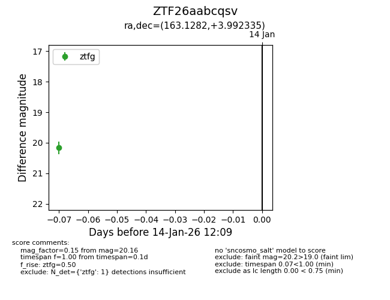
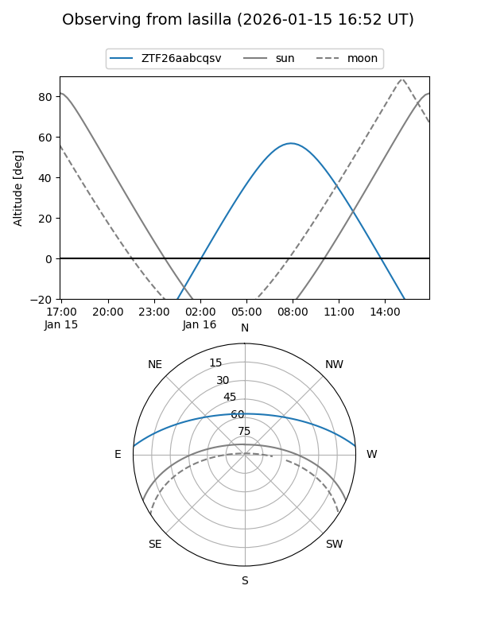
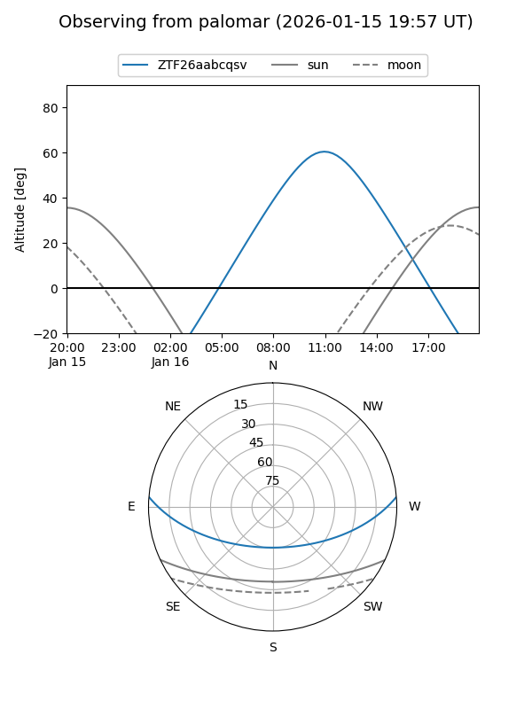

ZTF26aabcqsv
Target ZTF26aabcqsv at 2026-01-16 12:15
Aliases and brokers:
FINK: link
Lasair: link
ALeRCE: link
alt names
ZTF26aabcqsv (ztf,fink_ztf)
Coordinates:
equatorial (ra, dec) = 163.1282,+3.99233
equatorial (HMS+DMS) = 10:52:30.78,+03:59:32.40
galactic (l, b) = (246.8790,+53.38897)
Flags:
Photometry:
last ztfg=20.16
1 ztfg detections
Lightcurve

Visibility


Additional plots